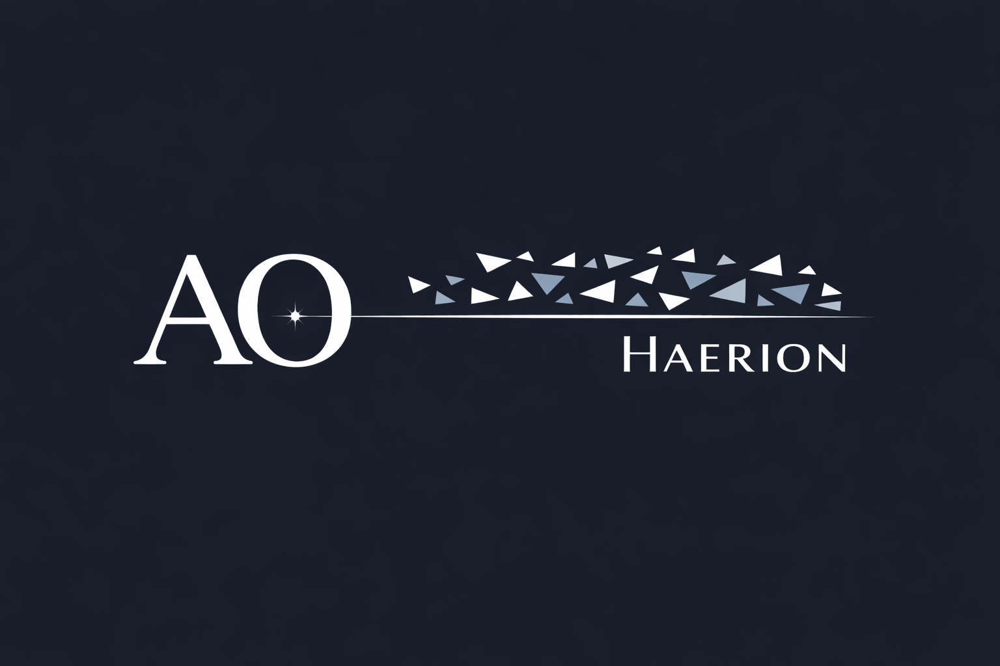

Clarify a situation
Turn a confusing context into something clearer and easier to read.

An evolving project built to help clarify situations, structure decisions, and move forward through complexity.
AO Haerion is not meant to become yet another interface that tries to answer everything. It is being shaped as a guided space for navigating complexity, where situations, doubts, and goals can become more readable and more structured.
Turn a confusing context into something clearer and easier to read.
Organize options, criteria, and tensions to reach a more readable choice.
Transform an intention or project into a structured and understandable path.
Recover the thread of an interrupted direction and move forward again.
We live in a time full of tools that respond, but very few that truly help people orient themselves. AO Haerion starts from that need: finding a road through chaos. Not just any answer, but a direction that can be read, followed, and built upon.
AO Haerion is currently in its public foundation phase. Identity, structure, visual language, public presence, and the first functional directions are being assembled step by step.